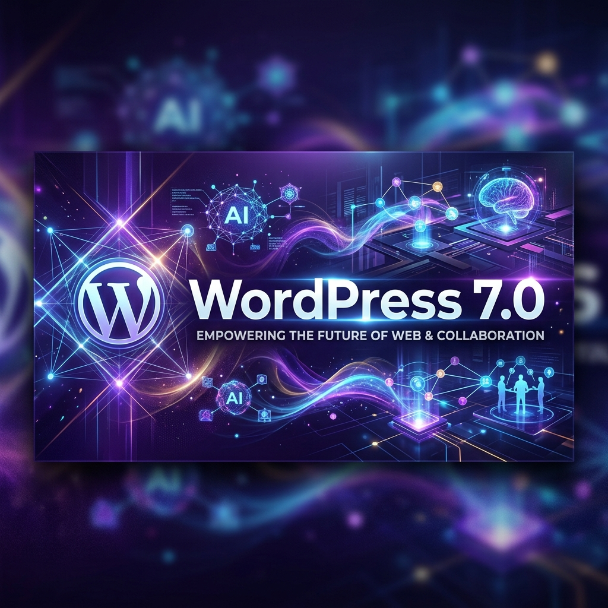
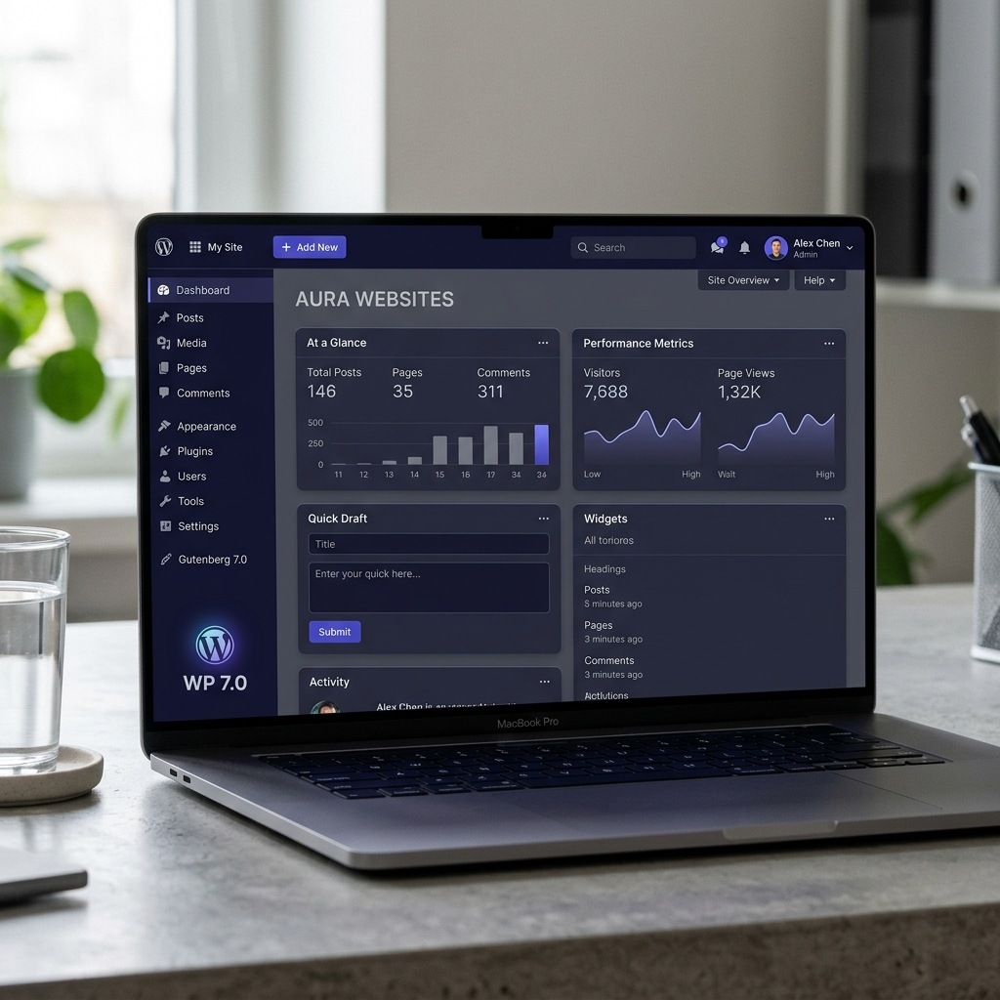
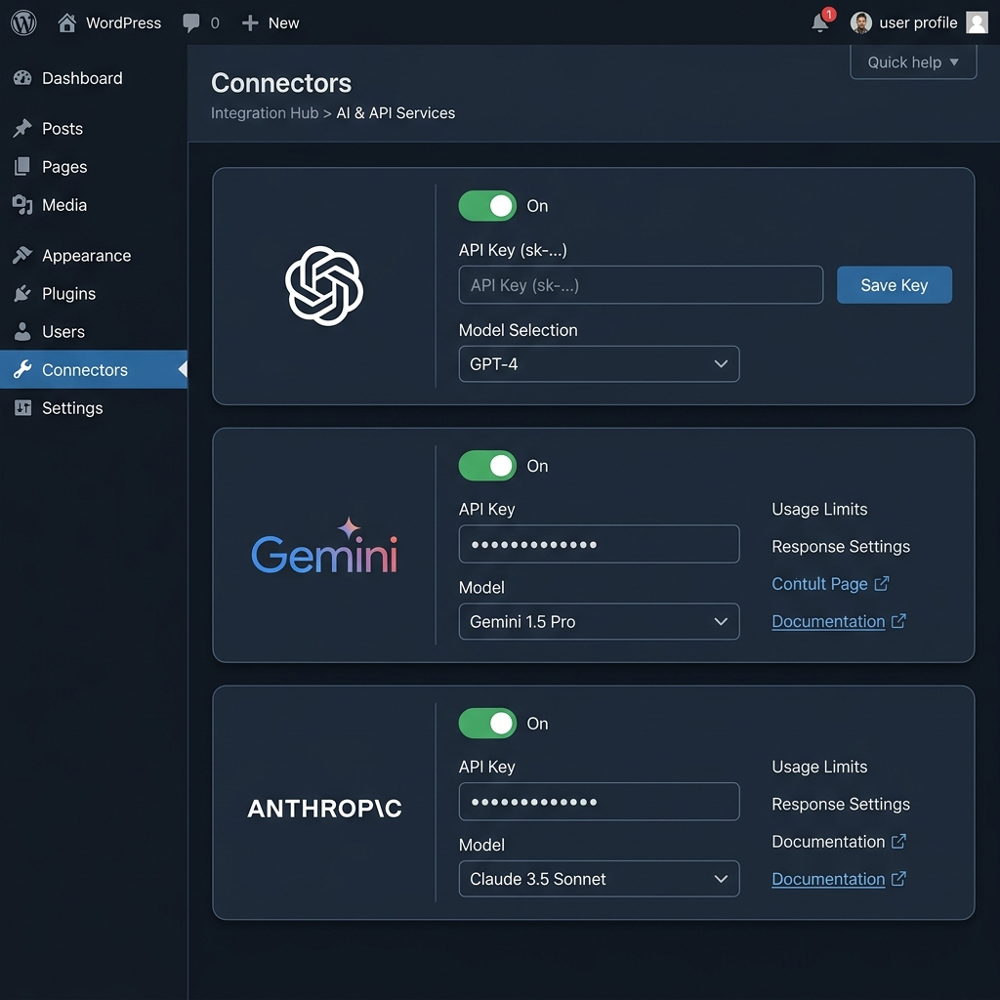
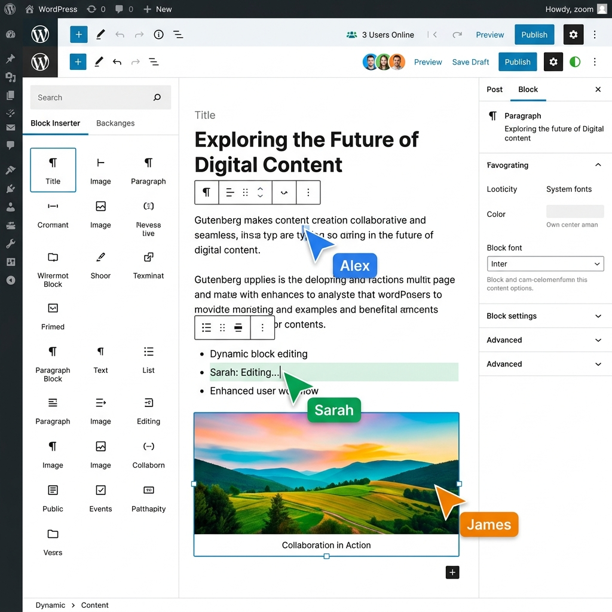
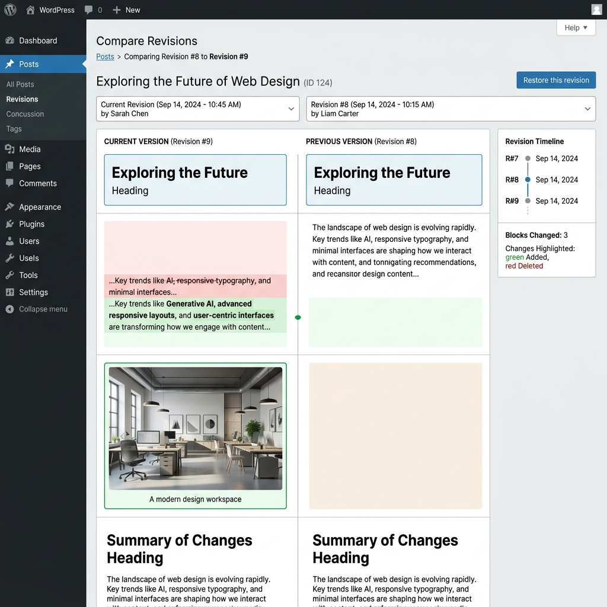
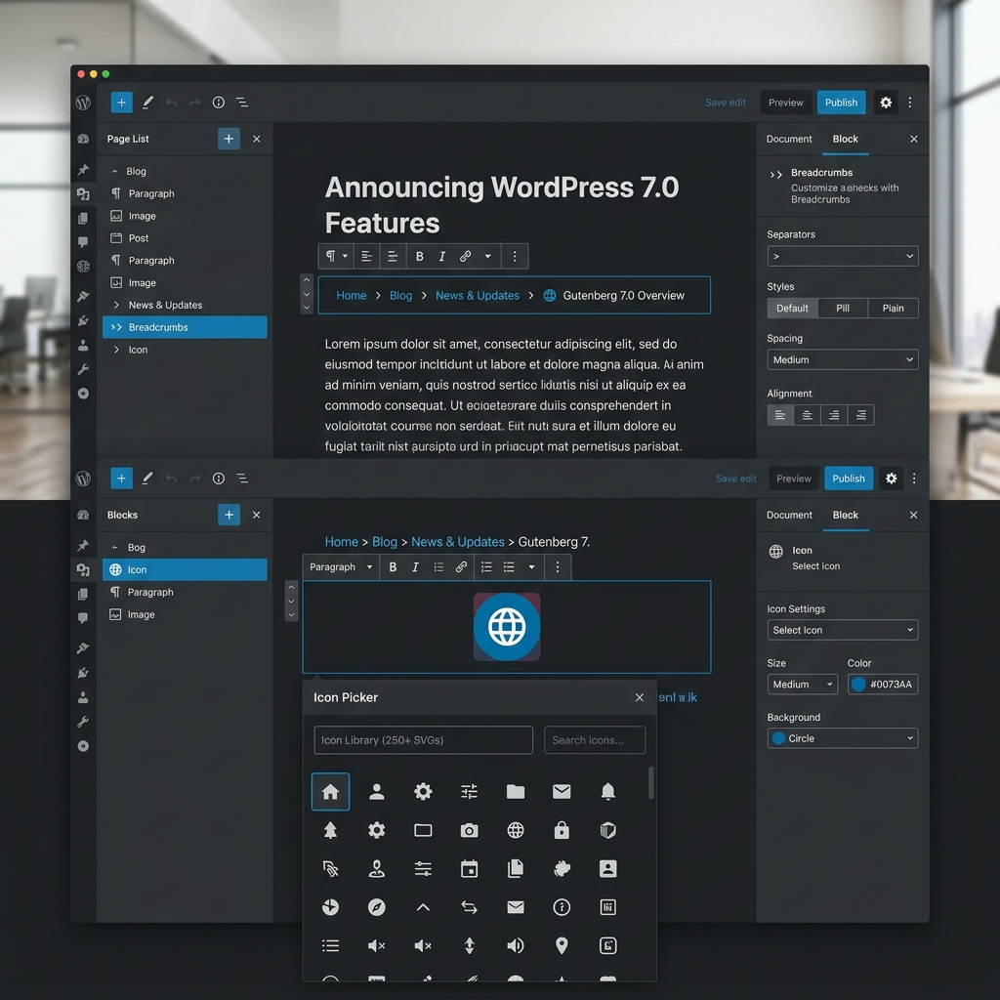

WordPress 7.0: AI, Real-Time Collaboration, and the Future of the Web


WordPress 7.0 isn't just an update; it's a paradigm shift. With native AI integration and real-time collaboration, the world's most popular CMS is evolving into a more connected and intelligent platform.
1. Release Date & Context
Initially scheduled for early April, WordPress 7.0 was released in May 2026. This delay allowed the core team to stabilize the groundbreaking real-time collaboration features that make this version a "Phase 3" milestone of the Gutenberg project.
As the first major version of 2026, it sets the stage for a roadmap that includes version 7.1 in August and 7.2 in December. This version includes updates from Gutenberg versions 22.0 to 22.6, bringing a massive amount of refinement to the site editor.
Modernized Admin Interface
The first thing you'll notice is the visual refresh. WordPress 7.0 introduces a more current color palette, improved typography for readability, and enhanced contrasts across the entire dashboard.

2. AI & Real-Time Collaboration
The Native AI Connector API
WordPress 7.0 introduces a standardized framework for connecting AI models directly to the CMS. Instead of relying on fragmented plugin implementations, developers can now use a native layer to connect providers like OpenAI, Anthropic, and Google.

Settings > Connectors: Manage your AI providers in one place.
Google Docs-style Collaboration
Real-time collaboration is finally here. Multiple users can edit the same content simultaneously, see each other's cursors, and identify which blocks are currently being modified. This is a game-changer for editorial teams and agencies.

Live avatars and cursors in the Gutenberg editor.
3. Redesigned Revisions & Design
Comparing changes used to be a headache, often requiring you to look at raw HTML code. WordPress 7.0 introduces a beautiful, block-based visual revision interface.

Visual side-by-side comparison of blocks with color-coded changes.
Font Management for All
The Font Library is now available for all themes, including classic themes. No more third-party plugins needed to host your own fonts.
Command Palette Everywhere
Accessible via Cmd+K, the command palette is now available throughout the entire admin area.
4. New Blocks & Customization
WordPress 7.0 ships with two highly requested native blocks, reducing the need for heavy SEO or UI plugins.

Breadcrumbs Block
Native breadcrumbs to improve SEO and navigation structure without extra code.
Icon Block
A sleek SVG icon picker with full customization options for size, color, and background.
Advanced Customization
Block-Level CSS
Add custom CSS directly to a specific block in the "Advanced" tab without affecting other elements.
Device-Based Visibility
Hide blocks on mobile, tablet, or desktop with a simple toggle in the block settings.
Enhanced HTML Block
The Custom HTML block now features dedicated tabs for CSS and JavaScript.
Responsive Grids
The Grid block is smarter, reorganizing columns intelligently for mobile devices.
Frequently Asked Questions
Which PHP version is required?
While it works with PHP 7.4+, the recommended version is PHP 8.3 for optimal performance and security.
Is my site compatible?
Yes, WordPress maintains high backward compatibility. However, check that your plugins are maintained and your theme doesn't use obsolete features.
Can I disable real-time collaboration?
Yes, it is optional and can be toggled in Settings > Writing if you prefer the classic editing experience.
Final Thoughts
WordPress 7.0 marks a significant milestone in the evolution of CMS technology. By embracing AI and collaboration as core primitives, WordPress is ensuring its relevance in a rapidly changing digital landscape.
Ready to update? As always, make a full backup of your site before making the jump. Happy publishing! 🚀
Discussion